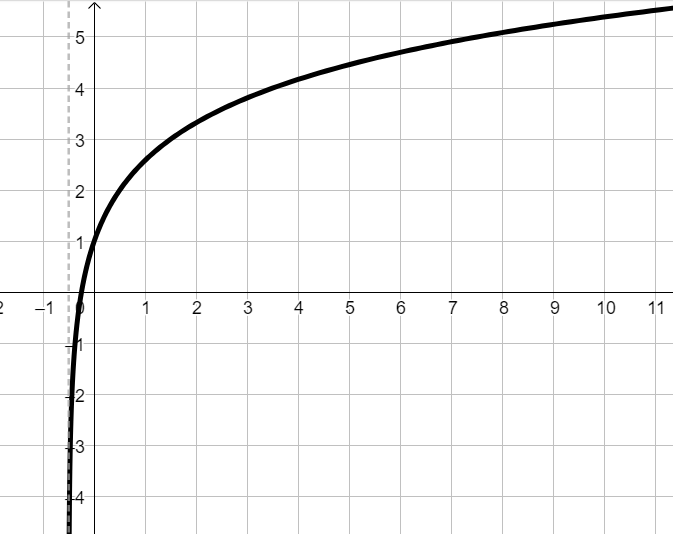
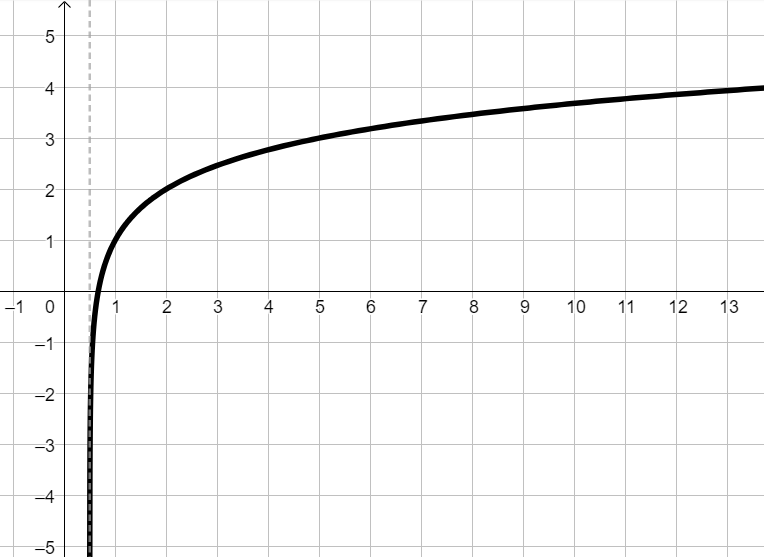
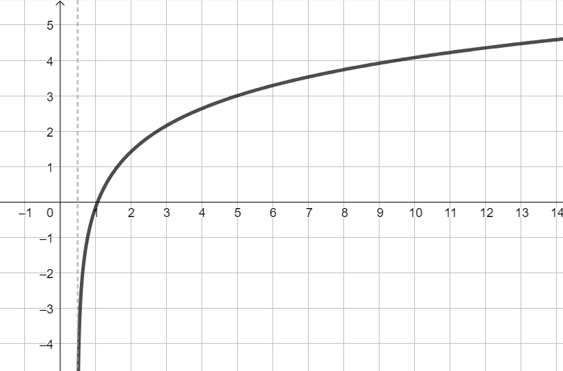

Si consideri la funzione
\[
h:\quad y = log_{_3}(2x - 1) + 1
\]
-
Stabilire il dominio della funzione \(h\);
-
calcolare il valore assunti dalla funzione in corrispondenza di \(x = 5\);
-
stabilire per quale valore di \(x\) la funzione assume valore \(y = 1\);
-
di seguito sono rappresentati tre grafici.
Servendosi delle informazioni ricavate
nei punti precedenti stabilire quale tra di essi non può rappresentare la funzione.



-
 presente in alto a destra del paragrafo)
presente in alto a destra del paragrafo)